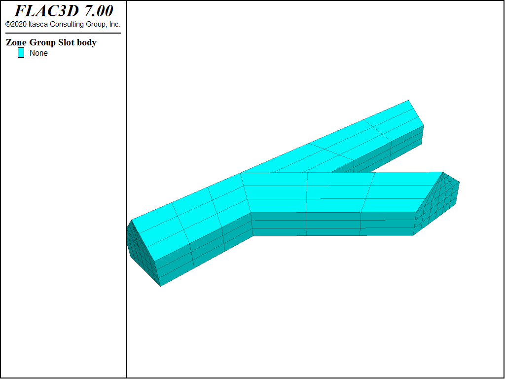
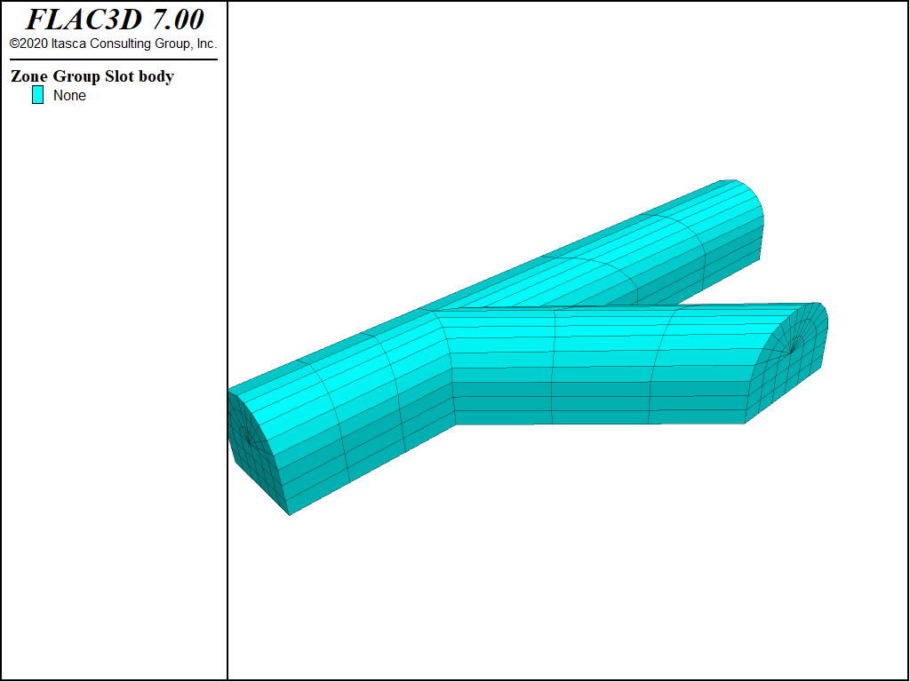
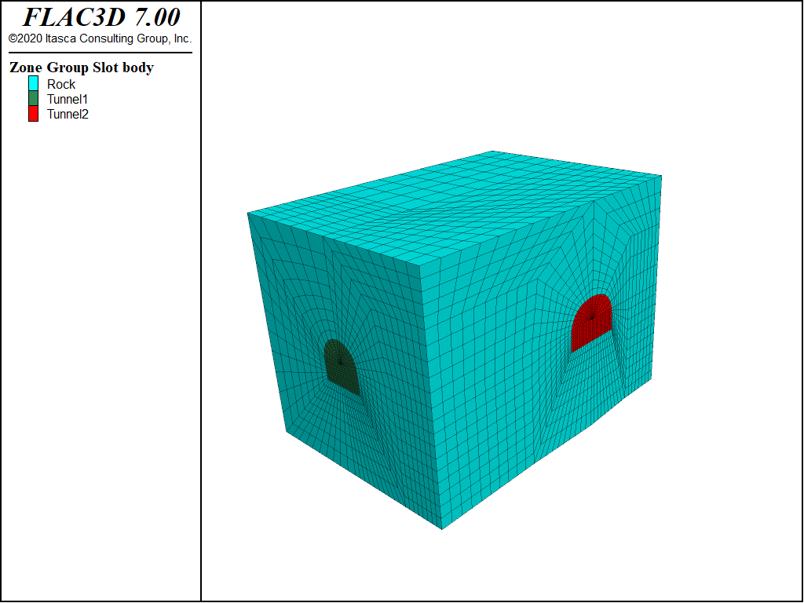
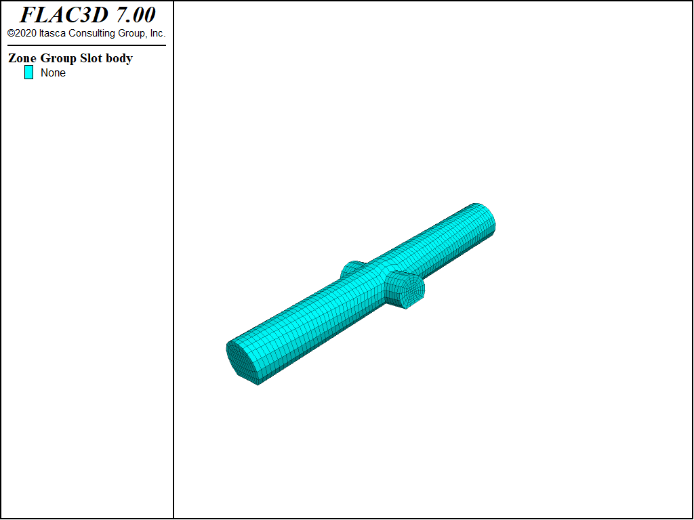
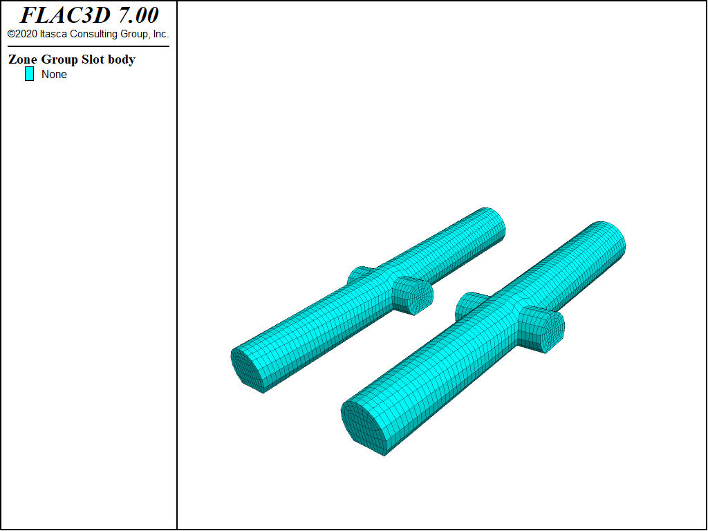
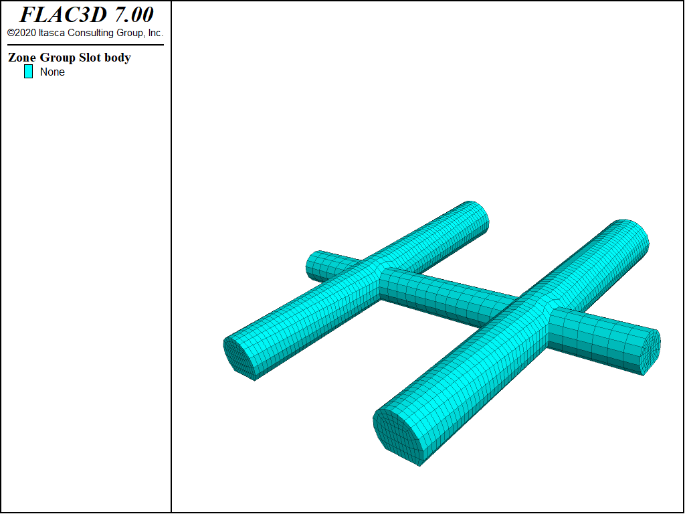
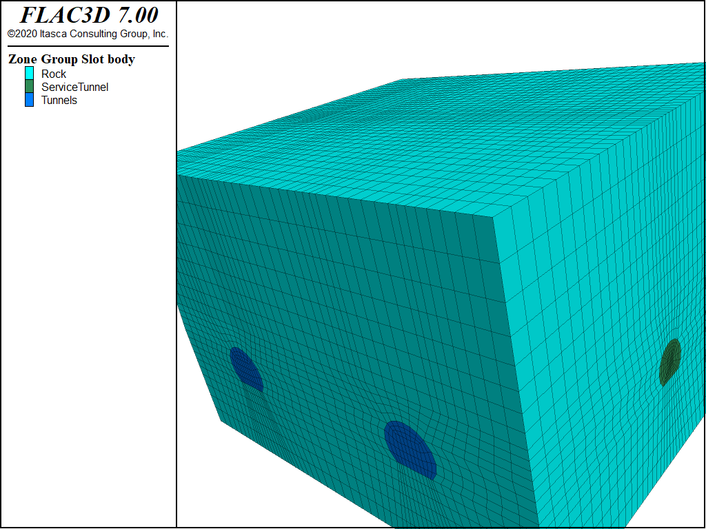

相交隧道的网格生成
问题描述
注意
在 FLAC3D 中查看此工程：
- 选择“ExampleApplications”
- 选择“IntersectingTunnels”
- 选择“IntersectingTunnels.f3prj”以加载
所使用的主数据文件（main data file）在本示例末尾给出。其余数据文件可在该工程中找到。
本节需要重写（尤其是新的插图，以及为 BB 工具提供更好的指示），以便更直观地说明块体构建过程中发生的情况
如前一示例（the preceding example）所示，FLAC3D 非常适合模拟隧道开挖推进与支护的行为。该程序也可用于研究隧道相交的三维问题。然而，为相交隧道模拟创建模型网格可能是一项艰巨的任务。
本示例说明如何使用 FLAC3D 图形用户界面中的块体构建窗格构建相交隧道。
为演示这一功能，创建了两个示例模型。第一个示例是两个尺寸相同的隧道以 45° 相交。第二个示例是一条小型服务隧道与两条平行的主隧道相交。
建模步骤
隧道以 45° 相交
如果相交隧道的断面高度和形状相同（马蹄形），则使用块体构建可将几何构建分为若干步骤。
第一步是创建相交隧道的基本几何，此时所有线段均为直线。


图 1：相交 45° 隧道的基本几何——直线。
第二步，利用曲线（圆弧和样条曲线）及控制点，塑造相交隧道的曲线几何。


图 2：相交 45° 隧道的基本几何——曲线。
第三步是用代表岩石的块体填充模型空间，为隧道和岩体指定分组，并沿边指定网格单元尺寸以实现合理的网格划分。


图 3：45° 马蹄形隧道相交的 FLAC3D 网格。
服务隧道与两条主隧道的相交
同样，该任务分为若干步骤。
第一步，创建一条主隧道与一条服务隧道的相交几何。此时为基本几何，不含精确相交面的细节。

第二步是确定一条主隧道与一条服务隧道的正确相交。


图 5：一条主隧道与一条服务隧道的正确相交。
第三步，利用上一步的结果，通过复制/粘贴块体（使用 编辑 菜单中的命令）复制一条主隧道与一条服务隧道的相交体，从而创建第二个相交体。


图 6：复制第 2 步的结果以创建第二个相交体。
接着，将各部分连接起来，形成贯穿两条主隧道的一条服务隧道（在块体构建中使用  和 ）。
和 ）。


图 7：贯穿两条主隧道的一条服务隧道。
第四步，填充代表模型其余部分（“岩体”）的块体，并沿边调整网格单元尺寸以实现合理的网格划分（同时指定分组“Tunnels”“ServiceTunnel”和“Rock”）。


图 8：贯穿两条主隧道的一条服务隧道的 FLAC3D 网格。
数据文件“IntersectingTunnels.dat”包含为示例“隧道以 45° 相交”创建网格的 FLAC3D 命令。
数据文件“ServiceTunnel.dat”包含为示例“服务隧道与两条主隧道的相交”创建网格的 FLAC3D 命令。
后续调用的所有命令，都是块体构建窗格以交互方式执行命令时所保存的状态记录的结果。
数据文件
IntersectingTunnels.dat
;-------------------------------------------------------------
; 生成 45 度相交隧道
;
;-------------------------------------------------------------
model new
model title 'Intersection of tunnels at 45 degrees'
; 构建基本拓扑：直线（并以网格单元形式绘制为 png 文件）
program call "GeometryTunnel45flatLines"
zone generate from-building-blocks
model save 'tunnel45-1'
; 将线弯曲，使其符合目标隧道形状
; （并以网格单元形式绘制为 png 文件）
zone delete
program call "GeometryTunnel45CurvedLines"
zone generate from-building-blocks
model save 'tunnel45-2'
; 用块体填充空间，并作调整，以改善网格划分……
; 用于静力问题（在隧道附近加密）
zone delete
program call "GeometryTunnel45RefinedForZonning"
zone generate from-building-blocks
model save 'tunnel45-final'
ServiceTunnel.dat
model new
model title 'The Intersection of a Service Tunnel with Two Main Tunnels'
; 第一部分：创建一条主隧道与
; 服务隧道相交的基本几何体（此处尚无相交曲面）
program call "GeometryServiceTunnel_part1"
zone generate from-building-blocks
model save 'service-1'
; 第二部分：精确处理
; 两条隧道曲面的交线
zone delete
program call "GeometryServiceTunnel_part2"
zone generate from-building-blocks
model save 'service-2'
; 第三部分：通过复制粘贴完成
zone delete
program call "GeometryServiceTunnel_part3"
zone generate from-building-blocks
model save 'service-3'
; 第四部分：复制粘贴第二部分的内容，并吸附合并，
; 完成服务隧道与两条主隧道的交汇
zone delete
program call "GeometryServiceTunnel_part4"
zone generate from-building-blocks
model save 'service-4'
; 第五部分：用块体填充剩余模型空间，
; 并为每条边分配网格尺寸以划分网格（此处也为
; 主隧道 "Tunnels"、服务隧道 "ServiceTunnel" 和岩体 "Rock" 分配组）
zone delete
program call "GeometryServiceTunnel_part5"
zone generate from-building-blocks
model save 'service-final'
| 这些内容对您有帮助吗？… | FLAC3D © 2019, Itasca | 原文更新于 2020 年 10 月 8 日 |